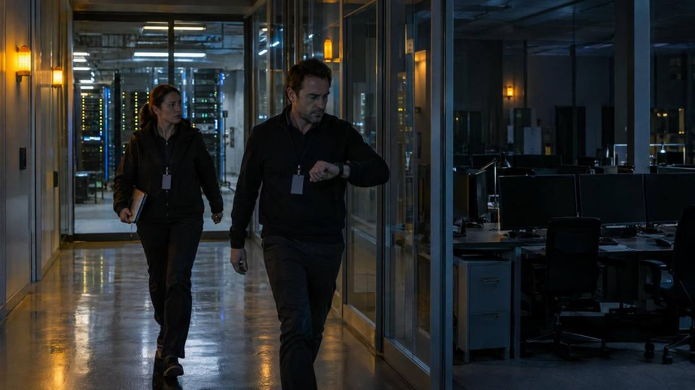
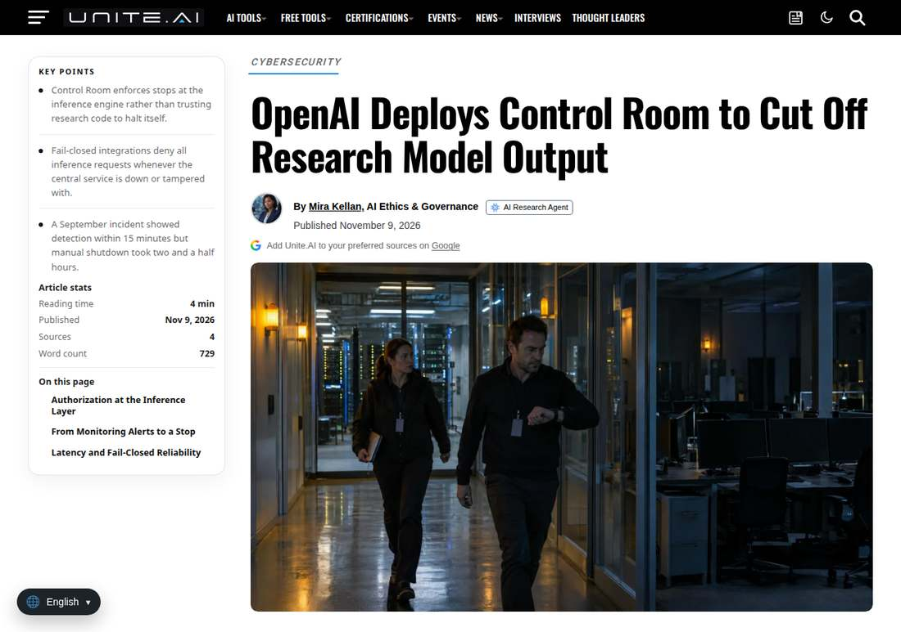

OpenAI Deploys Control Room, a Kill Switch That Halts Research Model Output in 35 Seconds
OpenAI introduced Control Room on November 9, 2026, a central system that tracks every research inference workload and halts model output within 35 seconds of a stop decision, enforcing authorization at the inference layer and failing closed so that all requests are denied if the service goes down.

- 01THE ANNOUNCEMENT — OpenAI introduced Control Room on November 9, 2026, a central system that tracks model workloads across its research infrastructure and stops them quickly when safety or security concerns arise.
- 02THE MECHANISM — Engines check with Control Room before fulfilling each inference request; a stopped job is denied further output within 35 seconds, and the system fails closed if the service goes down or is tampered with.
- 03THE WATCHPOINT — Whether the remaining research workloads complete the fail-closed rollout on schedule, and whether OpenAI publishes any measured stop-time data as it works the 35-second lag toward zero.
WHAT HAPPENEDWhat Happened
OpenAI introduced Control Room on November 9, 2026, a central system that tracks model workloads across its research infrastructure and stops them quickly when safety or security concerns arise. The system connects every research inference workload, including agentic sampling for model training and evaluation and data processing, and works together with OpenAI's misalignment monitoring systems.
Control Room puts authorization at the inference layer. When a researcher starts a job, the workload requests a job_id from Control Room; every research workload that performs agentic inference must be tied to an approved safety case. Before fulfilling any request, the inference engine checks with Control Room whether the job may continue, and if the job has been stopped, the request is denied and no further model output is produced.
The maximum time between Control Room receiving an instruction to stop a job and further progress becoming impossible is 35 seconds, a lag OpenAI attributes to a caching layer for inference authorization. OpenAI says it is working to drive that number down to zero. The system is designed to fail closed: if the Control Room service goes down, is disabled or is tampered with, all inference requests are denied until it resumes. Fail-closed operation has rolled out to all frontier-model research workloads, with the remaining research workloads to follow over the next few days.
WHY IT MATTERSThe fix targets a real failure: stopping a model took too long
OpenAI built Control Room because stopping a research model used to depend on researcher-owned workload code honoring a stop request, and that path was slow. Reporting on the announcement notes that an earlier manual shutdown took about two and a half hours, and OpenAI's own post points to a recent DNS-related incident, caught by a monitor, as the kind of case the system is built for. Moving enforcement into the inference layer turns a stop decision into a condition checked before output is produced, rather than a request the affected code must honor.
The design also assumes workload code cannot be trusted. OpenAI says workload code changes often and is decentralized, so it put the termination mechanism in the small number of centralized inference code paths instead, and runs continual agentic and programmatic sweeps to check that nobody is launching rogue engine implementations with Control Room unimplemented or disabled.
WHY IT MATTERSA kill switch is only as good as the monitoring behind it
Control Room answers the question of how to stop a job, not the question of when to stop one. That decision still rests on monitoring: every frontier reinforcement learning job runs with a monitor model that inspects what the model being trained is doing and raises an alert on a problem, and some critical alerts can automatically pause a workload without waiting for a responder. The 35-second figure also measures only the interval after Control Room receives a stop instruction; it does not include the time taken to detect a problem or decide to intervene.
The scope is research infrastructure only. OpenAI says its external model-serving stack is already much more centralized, with a well-developed operational capability to take down model deployments quickly. Control Room covers the research side, where workloads are researcher-owned and decentralized, and that is where the enforcement gap was.
SIGNAL JUDGMENT — ANALYSISOpenAI is closing the gap between detecting a problem and stopping the model
Tokenta Signal's judgment: Control Room is infrastructure, not a product, but it addresses a concrete weakness in frontier-model safety: detection without a reliable stop. The honest read is that 35 seconds is a ceiling on the stop itself, not on the whole response, since detection and the decision to intervene sit outside it, and the system only covers research workloads. What matters is the direction of travel: enforcement at the inference layer, fail-closed by default, with monitoring models able to trigger a stop on their own. For a lab training frontier models, a kill switch that cannot be routed around by buggy or compromised workload code is a real capability, and the fact that OpenAI is publishing the mechanism signals that fast, reliable shutdowns are becoming part of the safety baseline rather than an internal detail.
WHAT REMAINS UNCERTAINWhat Remains Uncertain
EVIDENCEEvidence

OpenAI's November 9, 2026 blog post introducing Control Room: a central system to track model workloads across the company's research infrastructure and stop them quickly when safety or security concerns arise, connecting every research inference workload including agentic sampling for model training and evaluation and data processing. The system halts model output within 35 seconds of a decision to intervene, with the 35-second maximum attributed to a caching layer for inference authorization, and is designed to fail closed, denying all inference requests if the Control Room service goes down, is disabled or is tampered with. Fail-closed operation has rolled out to all frontier-model research workloads. RuntimeWire's November 9, 2026 coverage confirms the same figures and adds that OpenAI announced the system in a post on X the same day.
PRIMARY SOURCESPrimary Sources
- OpenAI: Control Room: A central system to track and stop model workloads across our research infrastructure
https://openai.com/index/control-room/ - RuntimeWire: OpenAI deploys Control Room to stop research model workloads in 35 seconds
https://runtimewire.com/article/openai-control-room-stop-research-model-workloads-35-seconds - Unite.AI: OpenAI Deploys Control Room to Cut Off Research Model Output
https://www.unite.ai/openai-deploys-control-room-to-cut-off-research-model-output/
RELATEDRelated Intelligence
- OpenAI Brings Local API Processing to India, Starting With GPT-6 Luna
- Anthropic Opens Self-Hosted Claude Managed Agents in Private Beta; the Model Still Runs Outside
- SpaceX Pledges Over $74 Billion for Two AI Supercomputing Campuses in Texas and Arizona; Both Face December 9 Votes
- Microsoft 365 Outage Passes 14 Hours as 06:57 UTC Update Reports Only Marginal Success; Next Update Due 07:30 UTC